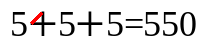
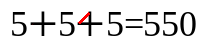
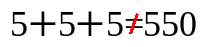

Rudolfs serie kom ju i flera varianter
Här är en till
"recdicine?" fnissar Rudolf
och hästen blir
en galen doktor
Ha en bra tisdag!
Rudolfs serie kom ju i flera varianter
Här är en till
"recdicine?" fnissar Rudolf
och hästen blir
en galen doktor
Rudolfs mattepussel
  Rudolf har en till gåta:
Kan ni lista ut vilket vädersträck
det är fiffigast för Tomten att
styra släden när han
reser iväg för att lämna paket
till alla barnen i världen